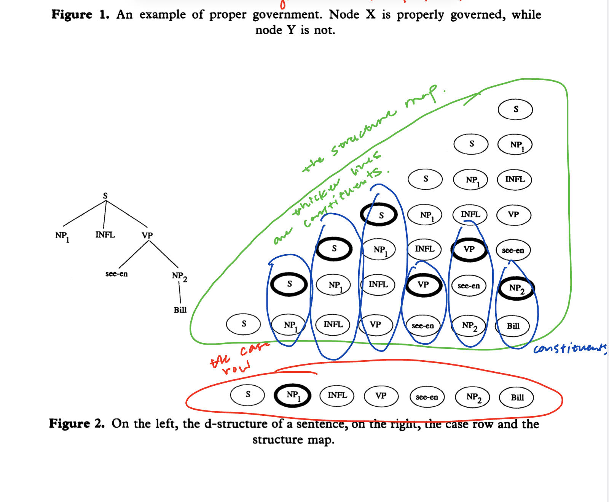
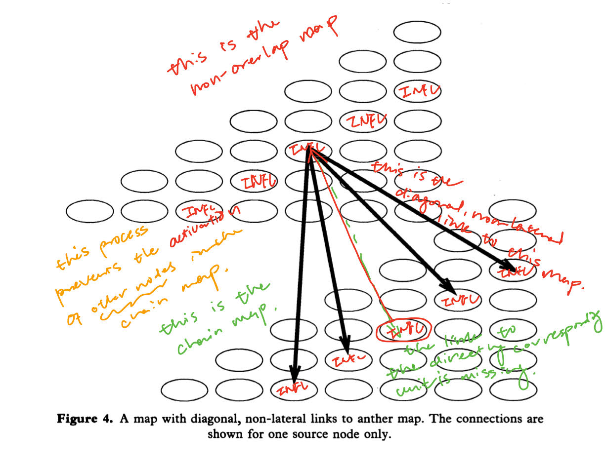
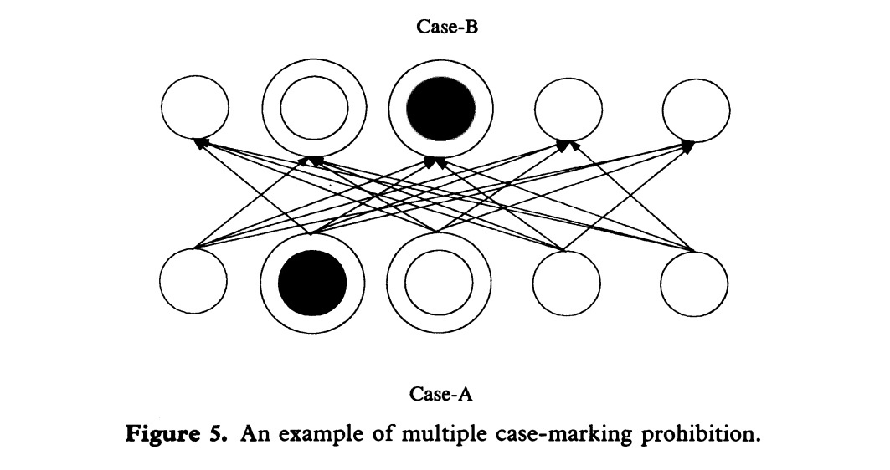
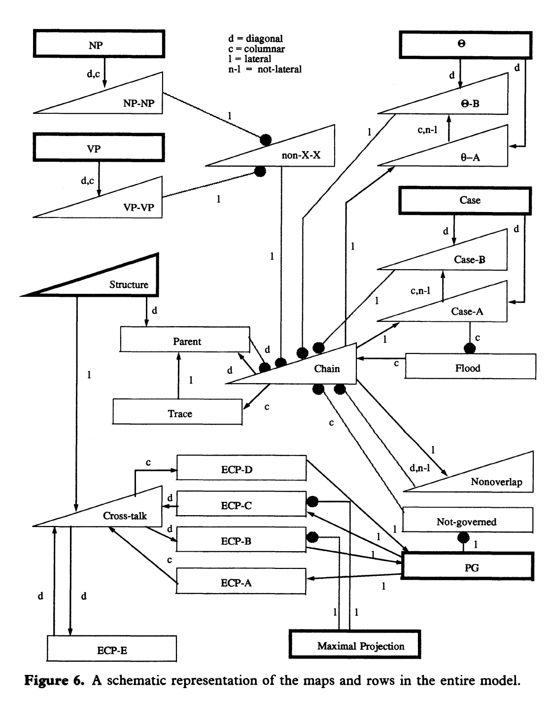
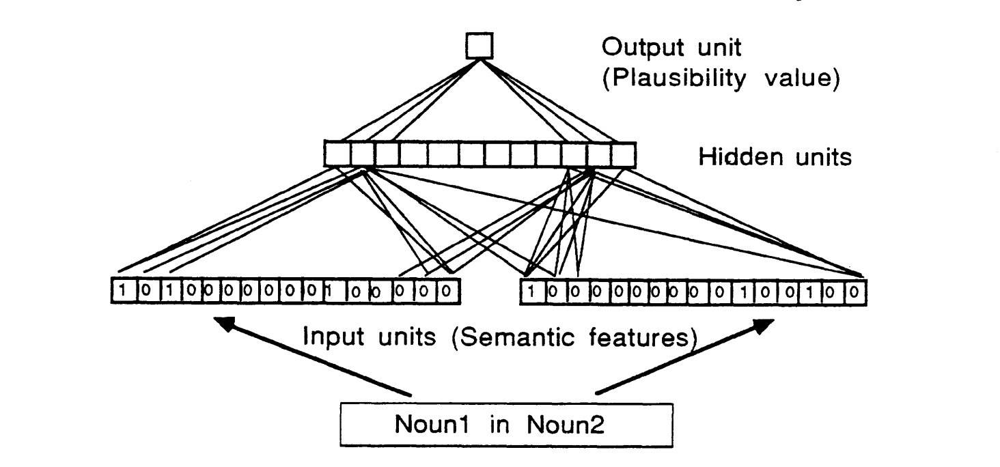
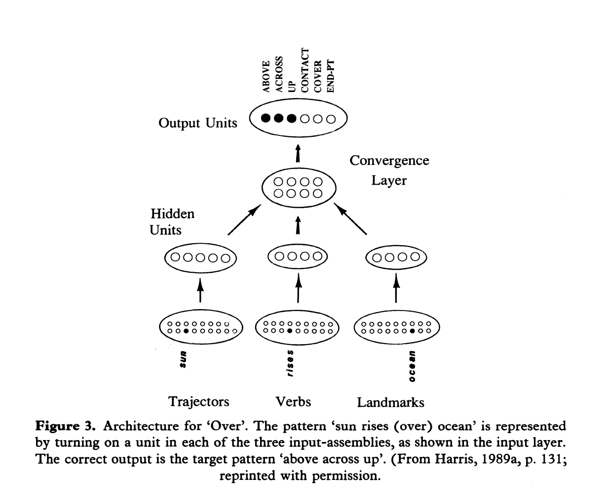

To answer this major question, it's important to draw inference from some of the important concepts in psychology. The first one is The Language of Thought Hypothesis and the second one The Representational Theory Of Mind. The first one touches on the importance of how our brain has a schema when it comes to producing language of thought, or called Mentalese. The Representational Theory of Mind on the other hand touches on our cognitive abilities to be able to have volition manifested in natural language through propositional attitudes. The schema goes as,
X believes that p iff X believes that S which is a mental representation and p is the actual manifestation of S.
That being said, the language that we used to describe our mental experience is only a representation of what in actuality the thing is inside our brain. This representation could bear a semantic property, be it a denotation or a truth-condition.
Continuing the discussion LOTH or the The Language Of Thought Hypothesis, again one can postulate that it's closely correlated with the mental representation (drawing reference from the representational theory of mind), and also as per the context of current discussions around understanding how the brain actually works (at least w.r.t the folk psychology) it confirms that Mentalese exists within the scope of research. These "mental representations" are called propositional attitudes and borne out in the form of a natural language as beliefs, desires, intentions, and fears.
The exactness of a mental language or a mental state is yet unknown. However, in folk psychology, these propositional attitudes are a direct reflection and serve a distinctive function to these mental images, in case the locutionary intends that the proposition A* gets assign to these mental states S. This might be fundamental for inferential reasoning, assuming the importance of how it's tied to relevant actions. The mental representations S here are put into "boxes" (a "belief box" or a "desire box"). That being said,
Someone who believes S stands in a psychologically important relation to the proposition expressed by S.
Another important point to bring up here pertaining to the discussion of systematically theorizing the representational theory of mind or what constitutes as a mental language is that token-and-type has to come into play. To be more specific,
the type is the mental representation itself (repeatable), and the tokens are reflected as the mental events or could be neurological. And thought processes are casual sequences of tokenings of mental representations.
So, to talk about the actualization of a mental image in such case, the process goes as,
However, it's also brought to attention that according to discussion, RTT requires qualification, meaning it needs context to be thoroughly discussed. Put simply, the mind could postulate an infinite amount of thoughts, but the important ones are qualified or vetted through propositional attitudes that are able to have an effect. Or intentional causation could only come about where there's an explicit representation.
Natural languages are compositional meaning that complex sentences are formed through simple linguistic expressions. In the same light, a mental language could be compositional and consist of symbols amenable to semantic analysis. This would be introduced as the COMP or The Compositionality of Mental Processes.
LOT claims that mental states typically have constiuent structures. That said, the mental state of intending something bears weight and complexity on its own not including their propositional objects or mental representations. Combined together the RTT + COMP builds the foundation for LOTH.
Ancient LOT proponents used syllogism and propositional logic to analyze the semantics of Mentalese. Current researchers instead use predicate calculus, which was established in the late 18th century and optimized in the 30s. The premise was that,
Mentalese contains primitive words - including predicates, singular terms, and logical connectives - and these words combine to form complex sentences governed by something like the semantics of the predicate calculus.
Logical structure only constitutes partly the complex representations, accompanied with other non-sentential formats including graphs, maps, diagrams, etc. They could also be manifested as ideas and imagistic forms. In fact, logic plays no role in such constructions only loosely connected structures did. Schematic mental maps in relation to actual concrete maps best describe these kinds of mental images and representations. Therefore, pluralism was adopted by some to analyze thoughts, including but not limited to logical structure, analogous images, maps, and diagrams, etc.
However illogical these perceptual mental representations are compositional and complex. They also display systematicity. Supporters of LOT will posit that The Computational Theory of Mind serves to produce the language of thought. Together RTT + COMP + CCTM (The Representational Theory of Mind, The Compositionality of Mental Processes, and The Classical Computational Theory of Mind) forges the LOTH. And our cognitive inferential systematicities provide the space for the above hypothesis to stand. However, the system considers only the syntactic importance without the presence of semantic significance.
In the modern era, CCTM is however excluded in the discussion. only RTT + COMP is included. This is the original spawning of a new school of computational theory of mind grounded in connectionism.
Now we could finally come back to discuss deep learning and the neural network models. In the 1980s, connectionism gained traction as an alternative to the Turing style computational model. The idea is that instead of treating the mental states as having memory access locations with a central processor and a bunch of strings and symbols ready to be manipulated, the connectionist approach treats them as more primitive. That said, under such condition, there are activations of neurons or so called "weight units" distributed and connected across the system, functioning analogously to the real synapses to our brain.
These newer and modern systems were built in hope that they could emulate the actual brain activity and could appreciate that
brain states are representational, so a good explanatory model should be able to capture that; second, thought processes are productive and systematic, which is manifested in the ability to conduct inferential reasoning.
To accept this position, connectionism has to accept RTT + COMP. Eliminativist connectionists might completely reject this position, and on the other hand implementationist connectionism might accept it in order to endorse the Turing style computational model.
Some literature later debated around the necessity of commitment to productivity and systematicity of thoughts. Supporters still seek to illuminate the traditional style of computational system. However, objections in entirety go against the need of adopting the representational theory. Another stream of objections go against the fact that the productivity and systematicity nature of language of thought had been greatly exaggerated. The last steak of objections posits that one can still create models that reflect the compositionality and the internal structures without adopting the Turing style model.
The connectionists contend that instead of a concatenated structure, distributed representations could well capture the integral parts of LOT. However, doubt was raised around the idea that if we consider concatenative constituency structure is only one of the realizations of the productivity and systematicity of the LOT, then these schools of neural models would still be considered as part of the classicism.
broadly speaking, classicists would appreciate the structural representations while the connectionists would appreciate the more distributed representations.
This part of the discussion is very important as it's pertaining to the origins and departures of these two schools of LOTH: rationalism vs empiricism or the classism vs the connectionism. The argument ties back to researches conducted around concept acquisition, and the innateness of toddlers to be able to adopt new things into their Mentalese. The hypothesis formulation and model testing done around the argument has suffered two logic fallacies: ad infinitum and the pain of circularity, as children could not possibly develop a meta-meta-language to explain a meta-language nor could they have the ability to represent something unless the concept is already known, which is through the required inductive reasoning in a hypothesis formulation about the denotation of Mentalese. Therefore, it bears that there's no such thing as concept learning. And the conclusion was that concepts are unlearned in fact they are innate.
In such a case, it's very important to explain what it means by understanding a natural language? The conclusion was that,
similarly to words (lexical items in a natural language), we can hardly define what a primitive expression's semantic properties exactly are. Though it's easy to illustrate the relations between complex expressions formed from these primitive expressions, researchers sought to create paradigms that could well capture the semantic properties of them. Here the strategy was to adopt functionalism (where mind is the functional organization of the brain). Therefore, the effort of categorizing what exactly it means by saying "X A's that p iff there is a mental representation S such that X bears A* to S and S means that P" gets broken down into two steps,
1. to explain in naturalistically acceptable terms what it is to bear psychological relation A* to mental representation S.
2. to explain in naturalistically acceptable terms what it is for mental representation S to mean that p.By treating these mental processes as type-token relations, we are able to provide a solution.
e and e* are tokens of the same Mentalese type iff R(e,e). And individuated in neurological terms it becomes that e and e are the tokens of the same primitive Mentalese type iff e and e* are tokens of the same neural type.
This is the process of naturalizing intentionality and individuating it through pure neurology. However above schema faces a challenge as it could not address the issue of multiple realizability, as it is defined heterogeneously in the realm of neuroscience, physics, and biology. In lieu of which, a functional definition is carried out and goes as,
e and e* are tokens of the same primitive Mentalese type iff e and e* have the same functional role.
The below strategy gains popularity as it facilitates the Turing style model treating mental processes as a "computational role" subscribing the "functional role" to Turing style computationalism formalism. And there are two categories that represent such a "functional role":
❗ MOLECULAR vs HOLIST.
Molecular theory treats separately the relations borne out between symbols; on the other hand, the holist theory is more fine-grained. In other words,
e and e* belong to the same primitive Mentalese type iff they have the same (canonical if adopted) functional role under MT and iff they have the same total functional role under HT.
To explain in simpler terms as I understood it, looking at a natural language say we have the simple term word and words in English serving as a basic unit or lexical item; they would belong to the same primitive type WORD as the same token under MT and different under HT. However it's concerned under HT that it might violate the publicity constraint as propositional attitudes are shareable. And in contemporary literature through the inferential judgement that in a natural language, there's a vague and arbitrary sense of denotation (The English word "cat" denotes cats, but could denote something had the linguistic convention presumes so), one can also conclude that in a Mentalese, such a case is applicable.
Yet, historical literature suggests an alternative view that addresses an distinction that Mentalese is essentially semantically permeated meaning that they are not arbitrary as a natural language is and at least to some extent they have a fixed denotation. This view is confirmed by the fact that different from a natural language, their intrinsic attribute is schematic and typical, meaning that they are types (if one may ask what ensures such a fixed position?) Therefore, CAT in a Mentalese would have denoted cat by its inherent nature and this semantically permeated approach adopts a classificatory scheme that allows the tokens getting categorized adopt semantic values. Finally, the denotation individuation approach goes as,
e and e* are the same primitive types iff they bear the same denotation.
However, this approach also faces some challenge. First, it violates the original LOTH's aim to naturalize intentionality in non-representational computational models, as this approach does not take into account the formal-syntactic types manipulated during mental computation (carried out in the FSC's provided explanation of semantic integrity). On top of it, this approach merely prevents the formal-syntactic Mentalese types while executing a reduction in the naturalization of intentionality.
In a nutshell, above individuation theories might not be adequate to account for the entirety of LOTH. More investigation is needed.
To answer this question, we might need to discuss the important researches done in the realm of around the 80s to 90s. As we have mentioned in previous paragraphs of the scientists' attempts to address the issues with representing a Mentalese in the realm of cognitive science.
In the same light, around the 90s emerging researches under the name Connection Science has sparked a unique route to addressing issues with representation (e.g. distributed vs. localist representations, classical vs. uniquely connectionist representation, type/token vs. part/whole hierarchies).
In this section and the subsequent sections, I will go through the Chomskyan Transformation Grammar Theory; we now may call it TG. The importance is that natural language modeling and understanding tasks often want to seek solutions that extract the underlying complex syntactic structure of a natural language. And oftentimes at least in Connection Science this is done through a more generally functionalism approach (we will get into this in more detail later).
In order to capture more complex syntactic structures that lie in a natural language sentence, the researchers of LOTH have put a great deal of effort in developing distributed representational models with endowment of some kind of compositionality abide to the COMP law (the Compositionality of Mental Processes).
The Schema of a Chomsky hierarchy is demonstrated below,
Formally, a content-free phrase-structure grammar is a 4-tuple , where:
( N and ) are finite, disjoint alphabets of non-terminals and terminals respectively.
P is a finite set of productions of the form where and .
S is a distinguished symbol in N, known as the start symbol.
For stochastic grammars, each of the productions has an associated probability, with the constraint that the probabilities of all the RHSs for any given LHSs must sum to one.
It is often useful to allow more than one start symbol, perhaps one for each pattern class. The set of all possible strings derivable (denoted by ) from S is denoted , i.e. the language generated by , where a non-terminal can be rewritten in more than one way, we use the disjunction symbol '|', e.g. means .
Deep vs. Surface Phrasal Structure - below is an example of a "passive transformation" changing a phrase's deep structure by moving the phrase's noun phrase from object position to subject position. For example,
a. d-structure: [] INFL see-en BILL
b. s-structure: Bill INFL seen-en e
Here the letter e represents the empty category that fulfills the empty category principle constraint
Government Binding - essentially what we see in above example is that in GB there are two phases in generation:
1. will still require the phrase structure rules.
2. the change from d-structure to s-structure.The Empty Category Principle - which is the constraint that whenever there's an empty category left behind by some sort of motion forced by case-filtering needs to be properly governed.
D-Structure - the d-structure is the product of phrasal structural rules that are derived from X-bar syntax, which provides a template for the structure of phrases (NP, VP, etc).
Case Filtering - Case is a grammatical marking which is assigned to phrase with specific structural relationships to various lexical items, such as verbs.
The -Role - similar constraint is the -criterion. In addition to case, a verb assigns some -roles ('thematic roles' such as agent, patient, goal). The -criterion says that a chain must have one and only one -role attached to it.
Movement- - During transformation, the d-structure turns into the s-structure which reflects (more or less) the actual form of the generated sentence. This movement is constrained by restrictions on the positions, items moved, and other properties of a chain. This is very crucial to pay attention to if a language modeling task needs to done addressing such a movement.
❓Why is this important to bring up here? As I have understood it, this is exactly a functionalism reductionism approach of mapping a natural language, in the sense that the constituent parts of an entire phrasal structure is the simpler reduction of the entire sentence as a whole.
And The correspondences between cognitive linguistics and connectionism are intriguing. Cognitive linguists view grammar as a schematic coding system that is induced from a very large number of pairings of form with meaning. The account of polysemy points to the need for a mechanism that can induce categories from a set of examples, learn to extract rules from rule-governed data, and resolve conflicts in rules by constraint satisfaction.
The grammar of a language is conceived by cognitive linguistics to be a pair of utterances and their meanings, where 'meaning' is broadly conceived to encompass all evoked conceptualization, including communicative function and extralinguistic aspects of the speech act.
Form-meaning pairs (also called 'grammatical constructions' or 'constructional schemas') can be highly specific, as happens with idiosyncratic expressions whose conditions of form and usage must be learned on a case-by-case basis, or they can be schematizations over large numbers of individual pairings.
These constructional schemas are the fundamental descriptive and explanatory device in cognitive linguistics; discovering the principles which constrain regularities in the form-meaning pairs of a language is understood to be the goal of linguistic research.
Under this interpretation of a grammar, all grammatical forms have a conceptual basis, although often a highly abstract one. There is thus no clear separation between grammar, semantics, and pragmatics, since semantic and pragmatic structures are included in the constructional schemas.
One typical example will be to use "peripheral constructions" to cover idiosyncratic expressions like idioms and conventionalized expressions.
On the other hand, the non-compositionality of semantics indicate that the meaning of an utterance is the mental conceptualization it evokes.
Cognitive linguists emphasize the search for principles which will facilitate an explanation of the range of form-meaning pairs in a given language.
(❓Why does a specific combinations of words evoke one particular schematic conception rather than another? Why are some word-combinations regarded as ill-formed? How can we describe this evoked conceptualization in a useful manner? )
Traditional attempts to understand the meaning of natural language utterances have typically divided the problem into two parts:
(1) how can the meanings of words be characterized.
(2) how are word meaning combined to yield sentence meaning.One early and conceptually simple approach was that the meaning of a word is the set of semantic features a language use would use to determine its real-world referent. Under this interpretation, the meaning of bachelor would be equated with features such as [HUMAN, MALE. UNMARRIED].
The meaning of a sentence can thus be understood to be an aggregation of the meanings the words in the sentence. This view of word and sentence meaning is a composition of semantic features and sentence meaning is a composition of the meanings of words.
A great deal of linguistic and psychological research has profited from adopting the compositional view. However, problems with the compositional view have been that identifying the set of primitive features works best for concrete nouns and some verbs but less well for words in other form classes. Another obstacle is polysemy: the apparent meaning of words shifts according to context, sometimes radically.
It was argued that the compositionality thesis can be saved by viewing the composite parts of a word to be rules (conditions on use) rather than inert features. Some of the rules may specify necessary conditions (for example, a necessary feature of red is COLOR) but many will only be types. In addition, some of the features might have fluid attributes that shift according to context, therefore a focal or central value as a constraint to model such an attribute might be important, if that attribute continuously shifts in the semantic space.
Research has shown that people gave intuitive categorizations of containers as either cups, bowls or vases is a graded function of these object's height to width ratio, together with the presence or absence of a handle. This type of categorization data, ubiquitous in psychology, compelled researchers to argue that the conditions on word meanings should be understood as 'preferences rules' - rules which form interactive systems operating according to principles of constraint satisfaction and violation.
Although it was taken seriously the idea that cognition is central to semantics, it was argued that there is only an arbitrary distinction between the concepts which we take to define the meaning of a word and our complete encyclopedic knowledge about the referent of that word. The approach is limited, however, in that it focuses on the first step of the problem of meaning and ignores sentence-level integration. Yet, it's still non-trivial in our discussion in the sense that from this point on, there is a new route in the discovery of better connectionist researches to address such issues.
❗Two of the researches will be introduced to dive a little deeper in this part of the conversation. TL;DR here, one utilizes mapping mechanism to try to capture Chomskyan phenomenon and another uses a simple neural network back-propagation architect to try to model the conceptual activation in the preposition 'over'.
| chain map with activated units on the right and d-structure on the left |
|---|
 |
This is another important attempt at bridging these two different schools of LOTH theory development together - the non-overlapping mapping mechanism (Rager and Berg, 1992). At a simpler level, a breath-first representation as a mapping was provided to capture the d-structure of a phrasal structure to a row and column representation with constituent parts highlighted (where the constituents preceding a constituent form the elements of the column above it as demonstrated in the graph above). This mapping also needs to satisfy the above constraints, which we will go into more depth in the subsequent sections.
A breakdown of such a structure in depth goes as,
Using Maps to Model Constraints on Move- Maps are either used for input and output or to enforce the structural constraints on the sentences. The input to the system consists of several rows representing different features of the constituents (-marking, case-marking, VP, NP, lexical-NP and maximal projection) and the structure map. The structure map shows, for each constituent in the sentence, which other constituent is its parent (i.e. immediately dominates it) in the structure. This is indicated by activating the unit representing the parent in the column above the constituent in the map. On the left in above figure is the tree representation of the d-structure of the sentence "Bill was seen". The map in this figure is the structure map, which is equivalent to the d-structure tree. The row is the case-marking row. Active units are indicated by the heavier lines.
The output of the system is the chain map. The chain map shows the chains created (if any) by movements in the transition from d-structure to s-structure. If a constituent began a chain, there will be an activated unit in the column above it to indicate the constituent which is the new location after the movement. If there were intermediate steps in the movement, multiple units will be active in the column. From this map and the structure map, the s-structure of the sentence can be determined. The chain map of the passive movement from sentence (1) is given in blow figure. The map tells us that the children of the second NP are moved to be the children of the first NP, while a trace is left behind.
Most of the maps in the system are not used to represent sentence structure; rather, they are used to enforce the constraints on movement. They do this through their excitatory and inhibitory links to other maps. The remainder of this section describes the use of maps to enforce four constraints: the non-overlap constraint, the case filter, the -role, and the empty category principle.
The non-overlap constraint - The non-overlap constraint says that chains may not overlap. Every unit in the chain map has an excitatory link to the corresponding unit in the non-overlap map. (This type of linking between the units in two maps is called lateral linking). Thus, the units active in the chain map will activate their counterparts in the non-overlap map. The units in the non-overlap map will in turn have inhibitory diagonal, non-lateral links to their counterparts in the chain map.
In diagonal linking every unit in the source map is linked to its counter part in each column of the target (i.e. to the corresponding diagonal). A diagonal, non-lateral connection is the same as a diagonal connection except that the link to the directly corresponding unit in a map to another map. The connections from an active unit in the non-overlap map to the chain map prevent the activation of any other node in the corresponding diagonal in the chain map, enforcing the constraint. (Nodes in the same diagonal represent the same syntactic marker and if two units both get activated and had moved to the same place, it will violate the non-overlap constraint).
| non-overlap constraints satisfactory map | case-marking prohibition activation map |
|---|---|
 |  |
The enforcement of the other stipulation, that all lexical NPs be case-marked, relies on the interaction between the flood row and the Case-A map. The units in the flood row which correspond to lexical NPs are initially active and through their columnar connections to the chain map they try to activate units in the chain map (they may not succeed). This has the effect of promoting movement of lexical NPs. As connections from it to the flood row turn off the corresponding units in the row. This has the effect of removing the incentive to movement of case-marked units, which is in accordance with the principle of the case filter.
| The resulting schema of the entire model |
|---|
 |
The resulting model is highly complex. However, the implementation and evaluation decision is far from arbitrary. In fact, it's highly regular and generalized to be applied to other example sentences (though not tested on wh-questions).
In the discussion section, it was noted that AI connectionist approaches seldom think of syntax as being constraint-based, they describe it in terms of high-level rules. However, GB theory imposes constraints globally on resulting structures and can provide insight into ways to model syntax in connectionist systems. Therefore, this research serves as a steppingstone to more interesting approaches and discoveries.
In fact, a few papers accomplished in the 1980s put effort into addressing this compositionality through coding the syntactic elements of the inputs at a higher level with a simple MLP neural network to train such a model and accomplish subsequent lower level parsing tasks.
This section will introduce one of the many researches that has put in such an endeavour to dive deeper and make the connection happen. In the paper that has conducted Hybrid Noun Phrase Analysis, under section 3 Learning Semantic Prepositional Relationships in Distributed Connnectionist Networks, the net work was built as such that for each preposition there is one back-propagation network that determines the plausibility of the prepositional relationships(see below figure). One network consists of three layers of units to cover the schema 'Sun (Trajector) rises-over (Locative-PREPOSITION) the sea (Landmark)'. The input layer consists of 32 binary units (value 0 and 1; and probably the earliest vectorization of words or word2vec) representing 15 features for each of the two nouns. The single real-valued output unit determines whether the prepositional relationship is plausible (value 1) or implausible (value 0). Twelve real-valued hidden units encode the mapping from the input units to the output units from a training set. All levels in the back-propagation network are fully connected. The graph of such a simple network is demonstrated below.

Such a network was introduced to cover the conceptual experience and idiosyncrasy raised in prepositions, here the example used is OVER as in 'sun rises over the ocean'. Because of the polysemous nature of the preposition, through some visualized investigation, it was decided to assign three main categories of spacial relationships for over: the simple 'above', the 'above-cross', and the 'cover' relationship. Inferring the intended relationship from a give over expression appears to involve constraint satisfaction: not all the component words in the utterance are compatible with all the major spatial meanings, and the interaction of these constraints typically results int he selection of a single meaning. The second reason presented by the paper was as described above that to model the polysemies of over is to explore the parallels between the 'linguist's task of rule induction and the input-output mappings that back propagation networks can solve. This was one of the pioneer models built around the idea of using a connectionist approach to solve more structured syntactic problems.

The architect of the network could be broken down as such,
The network was given the task of mapping input patterns of the form "trajector verb(over) landmark" as we have already demonstrated in previous sections. The above figure shows the entirety, including # layers, connections between layers, and the contents of the input and output layers.
The output layer. The output layer consists of six units, one for each of the three schemas, and three to indicate whether the landmark and trajector make 'contact', meaning whether if the path has an 'end-point' or 'upward' component.
The input layer. The input layer is reduced to only cover the necessary schema for the network, so a vocab of 18 trajectors, 15 verbs, and 15 landmarks. Also, notably no semantic information was given to the model of the sentence that could be constructed under the schema as a whole (represented in a localist fashion). That being said, they were preprocessed as separate units (activated in the vector) in hope that the model could capture some independent inference.
The details introduced here is very important, as it's required to discuss how the model learning the patterns gets postulated. In the paper, it was described that in order for the model to use the same set of weighted connections to map a large number of input patterns to their target outputs, then the network would have to learn, from the distributional regularities in the mapping between trajector-verb-landmark combinations and their output features, that
some input items are similar to others in some contexts but not in other contexts.
For example, some hidden units might learn to adapt to the similarities between a plane and a car, and the differences between a plane and a person. This architecture, in conclusion, had a relatively simple makeup in hope that the function of these hidden units (self-regulate, self-organize, and feature-detect) could be apparent, as they serve a specific functional role in the mapping from input to output layers (i.e. trajector role-specific hidden units will only receive input activated from the trajector vector). It was done in this style in hope that some inherent properties of the units in these schemas could be well captured.
Statistical Natural Language Processing "all The end-of-sentence auxiliaries you've heard a thousand times Uncontracted verbs increase the likelihood of disallowance Contractions. -Jeff Plummer (2011)
We have already mentioned miscellaneous statistical models and techniques for various computational tasks such as (in Section 2) HMM in POS tagging, probabilistic grammar modeling and parsing, statistical semantics, semantic disambiguation (lexical meanings, quantifier ranges, etc.), plan recognition, discourse modeling, and knowledge extraction texting. Here we try to provide a short, but slightly more systematic classification of the types of tasks handled in statistical NLP, as well as some insights into the most common modeling techniques and algorithms used in recent years and which have made statistical NLP so dominant, challenging the traditional view of computational linguistics.
This traditional view focuses on the derivation of meaning and is based on the assumption that syntactic, semantic, pragmatic, and world knowledge are used in this derivation to be "explicit" rather than probabilistic; i.e., that the distributional properties of a language are only essential to linguistic communication, not to the understanding, use, or even learning of the language. Thus, it is emphasized, in this view, that the formulation of non-probabilistic syntactic, semantic, pragmatic and KR theories will be deployed in language understanding and use. Of course, the problem of ambiguity has been a focal issue in the construction of parsers and language understanding systems, but the prevailing assumption has been that ambiguity resolution can be accomplished by supplementing it with some interpretive procedures to elaborate heuristics for expressing syntactic and semantic preferences.
However, experience has shown that the ambiguities that bother us require too many mappings, are too subtle, and are not amenable to heuristic arbitration. Instead, linguistic phenomena need to be treated as valid indicators of stochastic oscillations, and the properties of distributions generated by these stochastic processes need to be systematically exploited to derive reasonably reliable hypotheses about the underlying structure. (The Geoff Pullum quote above is relevant up to this point: the first occurrence of the inadmissibility of me to me in "I would rather be hated for who I am than loved for who I am not" is not readily attributable to any grammatical principle, and yet - based on hard evidence alone - has become the basis of our English usage. "I'd rather be hated than loved. Thus, at least for the time being, the emphasis has shifted to viewing NLP as a stochastic oscillator in the setting of uncertain reasoning and learning problems.
From a philosophical point of view, this shift is important, not just a practical one: it suggests that traditional thinking about language may rely too much on introspection. The limitations of introspection are that very little of what happens in our brains as we understand or think about language is approached consciously (see, for example, the discussion of the "two-channel" experiment in Baars 1997). We consciously register the results of our understanding and thinking, apparently in symbolic form, but not in the process of understanding and thinking itself; and these symbolic abstractions, which to some extent lack a quantitative or probabilistic dimension, can lead us to assume that the underlying processing is also non-quantitative. But the success of statistical NLP, as well as recent developments in cognitive science (e.g., Fine et al. 2013; Tenenbaum et al. 2011; Chater and Oxford 2008), has argued that language and thought are not only symbolic, but deeply quantitative, and especially probabilistic.
For the first two decades or so, the main goal of statistical NLP has been to assign tags, tag sequences, syntactic trees, or use statistical language translations as linguistic inputs to models trained on large corpora of observed linguistic usage. More fully, the types of tasks addressed can be roughly grouped as follows (where additional keywords indicate typical applications):
Text/document categorization: authorship, Reuters news categories, sentiment analysis. Categorization of selected words or phrases Broader contexts: lexical disambiguation, named entity recognition, multi-word expression recognition. Sequence tagging: cell phones → acoustic features → phonemes → words → POS tags ; Structural assignment of sentences: parsing, semantic role labeling, quantifier scoping; Sentence transduction: mt, low-frequency computation; Structural assignment of multisentence texts: discourse Relationships, recall, plan recognition; Large-scale relational extraction: knowledge extraction, paraphrase and implication relations. These groups may seem arbitrarily different, but as we will discuss further, certain techniques and distinctions are common to many of them, notably
In modeling: numerical and discrete features, vector models, log-linear models, Markov models; generative vs. generative discriminant models, parametric vs. nonparametric models; learning from data: maximum likelihood, maximum likelihood, and the ability to learn from data. Learning from data: maximum likelihood estimation, maximum entropy, expectation maximization, dynamic programming; supervised versus unsupervised learning; and In output computation: dynamic programming; unique output vs. distribution of output. We now try to provide some intuitive insights into the most important techniques involved in the seven groups and the differences between the above tasks. For this reason, we do not need to comment further on the range of quantifiers (in Group IV) or on Groups VI and VII, as most of these are covered elsewhere in the paper. In all cases, the two main requirements are the development of probabilistic models (aided by learning) to relate linguistic inputs to desired outputs, and the use of algorithms to assign labels or structures to previously invisible model inputs.
Text and document classification: In classifying substantive documents, the functions used may be normalized with respect to the frequency and punctuation of particular words (or classes of words). Especially for shorter texts, various discrete features may also be included, such as 0,1-valued functions indicating the presence of certain keywords or structural features. In this way, documents are represented as numeric vectors, where values in a high-dimensional space, with separate classes, presumably form a number of independent clusters in that space. A wide variety of classical pattern recognition techniques are applicable to learning to assign new documents (as vectors) to appropriate classes (e.g., Sebestyen 1962; Duda and Hart 1973). Perhaps the simplest approach (and the easiest to apply when the features are binary) is a simple Bayesian approach, which assumes that each class generates feature values that are independent of each other. The generative frequencies are estimated from the training data and class membership The probability of unknown documents (vectors) is computed by Bayesian rules (the probability can be accomplished using successive updates of the previous class). The class with the highest result is selected. The posterior probability then provides a decision criterion. A common generative model of real-valued features allows feature interactions, treating known members of any given class as example multivariate normal (Gaussian) random variables. The learning case here consists of estimating the mean and covariance matrix for each class (an example of maximum likelihood estimation).
The traditional discriminative approach, which does not presuppose any Generating a model that involves the computation of hyperplanes Partitioning clusters of instances of a known class with respect to each other (optimization involves certain metrics of variance within and between classes); new instances are assigned to their partitions and they fall down. Perceptrons provide a related technique, as long as they linearly determine class membership based on a combination of feature values; their particular advantage is that they can learn incrementally (by adjusting feature weights) as more and more training data becomes available. Another persistent discriminative method (that does not rely on the linear separability of classes) is the k-Nearest Neighbor (kNN) method, which assigns a vector space of unknowns to the text or document of the class most prevalent among its k (e.g., 1-5) nearest neighbors. While all of the previously mentioned methods rely on parameter estimation (e.g., generative probabilities, Gaussian parameters, or coefficient separation planes), kNN does not use such parameters-it is nonparametric; however, finding a suitable measure of proximity or similarity can be challenging and errors due to arbitrary local data point configurations in the functional space are difficult to avoid. Another non-parametric discriminative method worth mentioning is the use of decision trees, which can use information theoretic techniques; they allow classes to be selected by following root-to-leaf paths, and branches to be selected by testing the characteristics of a given input vector. A potentially useful property of learned decision trees is that they can provide insight into the most important features (this insight can also be provided by dimensionality reduction methods). However, decision trees tend to converge to a non-global optimum (global optimization is NP-hard) by splitting the data, which tends to prevent the modeling of feature interactions; this shortcoming can be mitigated to some extent by using decision forests.
Having mentioned some of the traditional classification methods, we now sketch two approaches in statistical NLP since the 1990s. the first, which has mathematical roots dating back to the 1950s, is MaxEnt, also known as (polynomial) logistic regression (e.g., Ratnaparkhi 1997). The features in this case are any desired 0, 1 values (binary) given a linguistic input and a function of possible classes. Continuous features, supervised or unsupervised discretization methods, such as entropy-based partitioning into a certain number of intervals, can be applied. Provide training data The frequency of occurrence of these features, distributed as the conditional probability derivation of the class, given the linguistic input. (Thus, this is a discriminative method. As the name implies, this conditional probability function is a maximum entropy distribution constrained to match the binary frequency of features observed in the training data. Its form (separated from the constant multiplier) is an exponential whose exponent is a linear combination of the binary eigenvalues of the given input and the given class. Thus it is a log-linear model (a distribution whose logarithm is linear in its elements) - a model that is now common in many statistical NLP tasks. Note that since the logarithm is any linear combination of binary eigenvalues given the inputs and any given class, choosing the class with maximum probability given the inputs is equivalent to linear decision making, as in some classical approaches; however, MaxEnt usually provides better classification performance, and the probabilities provided by the classification can be useful in further computations (e.g., anticipatory utilities).
Another important approach to the emergence and success of statistical NLP is the support vector machine (SVM) approach (Boser et al., 1992; Cortes and Wapnick 1995). The great advantage of this method is that it is in principle possible to distinguish between arbitrary configurations of classes by implicitly projecting the original class vectors into a higher (or infinite) dimensional space, where the classes are linearly divisible. The projection is mediated by a kernel function - a similarity measure on pairs of vectors, e.g. a polynomial in the dot product of two vectors. Approximately, the components of higher dimensional vectors correspond to the terms of the kernel function, which, if extended to the product are characterized by the original, unexpanded pair of vectors. However, there is no actual expansion, and the classification criteria obtained only from a given training corpus require the computation of a kernel function vector (representing the document to be categorized) for a given function with some special "support vectors", and a linear comparison of the resulting values combined to a threshold value. The support vectors belong to the training corpus and define two parallel hyperplanes (in an extended space) that separate the relevant classes as much as possible. (Thus, this is a "maximum margin" discrimination method. Support vector machines typically provide excellent accuracy, partly because they allow nonlinear feature interactions (in the original space), and partly because the maximal margin approach focuses on class separation rather than conditional probability modeling of classes. On the other hand, MaxEnt classifiers are faster to train than SVMs and often provide satisfactory accuracy. General references covering the classification methods we outline are (Duda et al. 2001; Bishop 2006).
Classification of selected words or phrases Broader context: as mentioned earlier, examples include WSD, named entity recognition and sentence boundary detection. The only point of difference with text/document categorization is that it is not the entire block of text that is to be categorized, but rather such a block of words or phrases in the context that is to be categorized. Therefore features are chosen to reflect the characteristics of the target word or phrase (e.g. as morphology) and the way it relates to its context, in terms of e.g. surrounding words or word classes, (possibly) local syntactic dependencies, as well as a wider range of features such as Word frequencies or document classes. In addition to such differences in how features are selected, the same (supervised) learning and classification methods discussed above can be applied. However, sufficiently large training corpora may be difficult to build. For example, in statistical WSD (e.g., Yarowsky 1992; Chen et al. 2009), since thousands of words can be used in a single corpus, it may be difficult to construct a large enough training corpus. For example, in statistical WSD (e.g., Yarowsky 1992; Chen et al. 2009), where thousands of words have multiple meanings in a source such as WordNet, it is difficult to construct a training corpus that contains enough perceptually annotated training corpora with all of these sensory occurrences to allow for statistical learning. As a result, annotations are usually limited to the senses of a few polysemous words, Statistical WSD has been shown to be feasible for selected words, but broad coverage of WSD tools remains elusive.
Sequence markers: There is a somewhat arbitrary line between the front task and sequence markers. For example, it is quite possible to think of POS tagging as a task of categorizing words in a text with respect to their context. However, this approach fails to take advantage of the fact that the classification of neighboring words is interdependent. For example, in the sentence (from the web) "I don't fish like most people", the presence of don't should favor classifying fish as a verb, which in turn should favor classifying like as a preposition. (In At least this preference makes sense for declarative clauses; replacing "I" by "why" would change things - see below. Such cascading influences are not readily passed through successive independent classifications, and they motivate generative sequence models such as HMMs. for POS tagging, the tagged training corpus can provide an estimate of the probability of the next POS word, given the POS of the current word. if the corpus is large enough, it can also provide an estimate of the probability of the word "emitting". If the corpus is large enough, it can also provide an estimate of the probability of word "emission" for most of the words typically seen in the text, i.e., the likelihood that they will occur given the POS label. (Smoothing techniques are used to fill in the unknown non-zero probabilities given a POS. we have previously mentioned the Viterbi algorithm as an efficient dynamic planning algorithm that applies the HMM (trained as just described) to the task of assigning the maximum probability of the POS labeling sequence of words to the text. Bicorrelation algorithms, i.e., forward and backward algorithms, can be used to derive the possible tags for each word at position i, which may be more useful for subsequent high-level processing than the "best" tag sequence. Effective forward algorithms (through dynamic programming) sum the probabilities of all label sequences up to and including the position i at a word ending with a specified label X and generate input up to and including the word. The inverse algorithm sums the probabilities over all tag sequences, starting with tag X at position I, and generates inputs from position I+1 to the end. The forward product and reverse probability, normalized so that the alternative labels at probability position i sum to 1, give the probability of X at position i for the entire input.
Translated with www.DeepL.com/Translator (free version)
Topic 1: Math and Physics